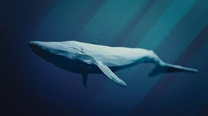
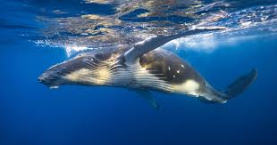
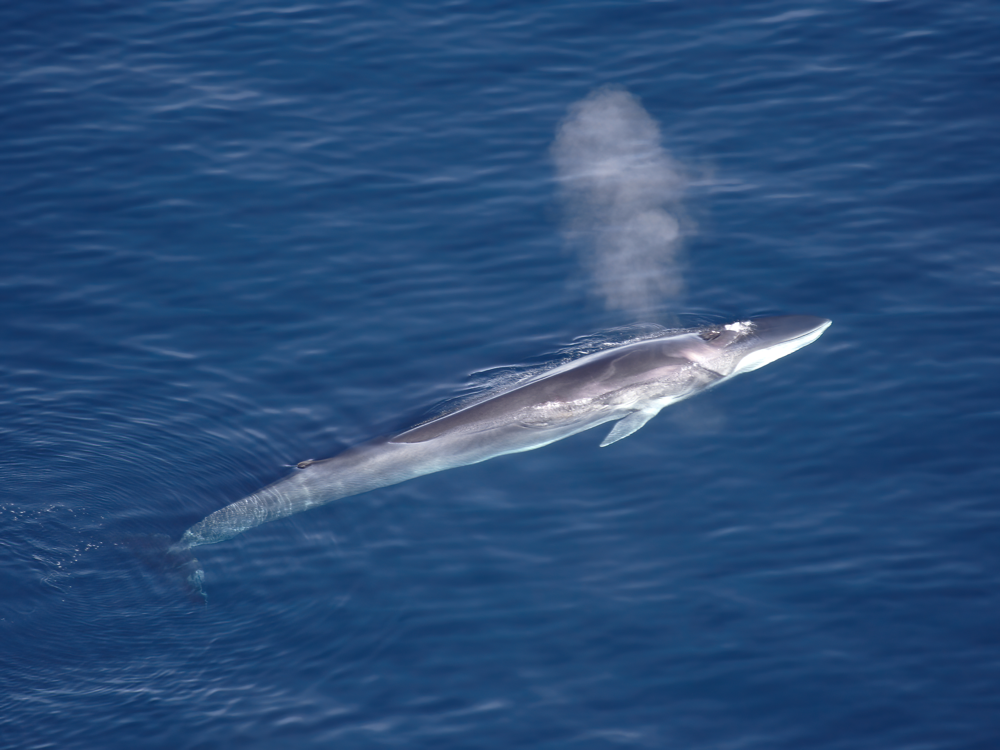
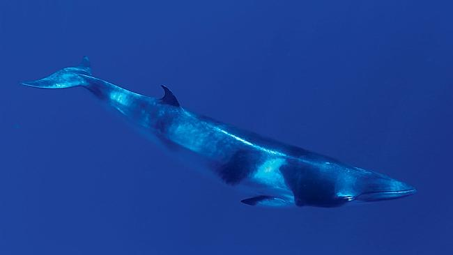
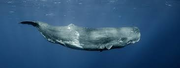
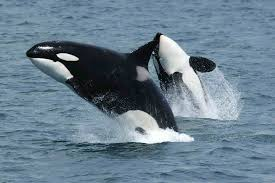

BALENE CU FANOANE
Balenele cu fanoane nu au dinți. Ele au plăci speciale numite fanoane, care le ajută să filtreze hrana din apă. Aceste balene se hrănesc în special cu krill și pești mici.
Un exemplu cunoscut este balena albastră, cel mai mare animal de pe Pământ.
Balena albastră

Balena albastră este cel mai mare animal care a existat vreodată pe Pământ, fiind mai mare chiar și decât cei mai mari dinozauri. Ea poate ajunge la o lungime de aproximativ 30 de metri și poate cântări peste 150 de tone. Inima unei balene albastre este atât de mare încât poate cântări cât o mașină mică.
Această balenă trăiește în majoritatea oceanelor lumii și preferă zonele bogate în hrană. Se hrănește în principal cu krill, niște crustacee foarte mici, pe care le filtrează din apă cu ajutorul fanonelor. În fiecare zi, o balenă albastră poate consuma câteva tone de hrană.
Deși este atât de mare, balena albastră este un animal liniștit și pașnic. Sunetele produse de ea sunt printre cele mai puternice din regnul animal și pot fi auzite pe distanțe foarte mari în ocean.
Balena cu cocoașă

Balena cu cocoașă este cunoscută pentru comportamentul său spectaculos. Ea sare adesea deasupra apei și cade cu putere, un comportament care impresionează turiștii și cercetătorii. Aceste sărituri pot avea rol în comunicare sau în eliminarea paraziților.
Un alt aspect fascinant al acestei balene este „cântecul” ei. Masculii produc sunete complexe care pot dura zeci de minute și se repetă în mod regulat. Aceste cântece sunt folosite pentru comunicare și atragerea femelelor.
Balena cu cocoașă migrează anual pe distanțe foarte lungi, deplasându-se din apele reci, bogate în hrană, spre apele calde, unde se reproduc.
Balena comună (Fin whale)

Balena comună, numită și Fin whale, este a doua cea mai mare balenă din lume, fiind depășită doar de balena albastră. Poate ajunge la o lungime de aproximativ 27 de metri și poate cântări peste 70 de tone. Corpul său este lung, subțire și aerodinamic, ceea ce îi permite să fie una dintre cele mai rapide balene.
Această specie trăiește în majoritatea oceanelor lumii, preferând apele adânci și deschise. Balena comună se hrănește prin filtrarea apei, consumând krill, plancton și pești mici. În timpul sezonului de hrănire, poate consuma cantități foarte mari de hrană pentru a acumula energie.
Balena comună este cunoscută pentru sunetele sale joase, care pot călători pe distanțe foarte mari prin apă. Aceste sunete sunt folosite pentru comunicare între indivizi.
În trecut, această specie a fost vânată intens pentru carne și grăsime, ceea ce a dus la scăderea populației. Astăzi, este protejată prin legi internaționale, însă încă se confruntă cu pericole precum poluarea și coliziunile cu navele.
Balena minke

Balena minke este una dintre cele mai mici balene cu fanoane, dar este foarte activă și rapidă. De obicei, ajunge la o lungime de aproximativ 7–10 metri. Există două specii principale: balena minke comună și balena minke antarctică.
Această balenă trăiește în aproape toate oceanele lumii, adaptându-se atât la apele reci, cât și la cele temperate. Este mai greu de observat decât alte balene, deoarece nu sare des la suprafață.
Balena minke se hrănește cu pești mici, krill și plancton, folosind fanoanele pentru a filtra hrana din apă. Este o înotătoare rapidă și poate parcurge distanțe mari în timpul migrației.
Deși populația ei este mai stabilă decât a altor balene mari, balena minke este încă afectată de activitățile umane, inclusiv poluarea și pescuitul excesiv.
BALENE CU DINȚI
Balenele cu dinți au dinți puternici și vânează activ prada. Ele consumă pești, calmari și alte animale marine.
Cașalotul este una dintre cele mai cunoscute balene cu dinți și poate coborî la adâncimi foarte mari pentru a-și găsi hrana.
Cașalotul

Cașalotul este cea mai mare balenă cu dinți și unul dintre cei mai impresionanți prădători ai oceanelor. Are un cap foarte mare, care poate reprezenta aproape o treime din lungimea corpului său. În interiorul capului se află o substanță specială numită spermaceti, care ajută la reglarea flotabilității.
Această balenă se scufundă la adâncimi extreme, uneori peste 1.000 de metri, pentru a vâna calmari uriași. Poate rămâne sub apă mai mult de o oră fără să respire, ceea ce o face una dintre cele mai bune scufundătoare din lume.
Cașaloții comunică prin sunete puternice, numite clicuri, care îi ajută să se orienteze în adâncurile întunecate ale oceanului.
Orca

Orca, cunoscută și sub numele de „balena ucigașă”, este de fapt cel mai mare membru al familiei delfinilor. Este un animal extrem de inteligent și trăiește în grupuri organizate numite „poduri”.
Orcile vânează în echipă și folosesc strategii bine coordonate pentru a prinde prada. Ele pot consuma pești, foci și alte mamifere marine. Comunicarea dintre membrii grupului este foarte dezvoltată.
Fiecare grup de orci are propriile sunete și comportamente, asemănătoare unei „culturi” specifice.
Narvalul

Narvalul este una dintre cele mai neobișnuite balene din lume. Este cunoscut pentru colțul său lung, care poate ajunge până la 3 metri. Acest colț este, de fapt, un dinte modificat.
Narvalii trăiesc în apele reci din zona Arctică și sunt adaptați la temperaturi foarte scăzute. Ei se hrănesc cu pești și calmari și pot face scufundări adânci pentru a-și găsi hrana.
Din cauza schimbărilor climatice și a topirii gheții arctice, narvalii sunt tot mai vulnerabili.
Beluga

Beluga, cunoscută și sub numele de „balena albă”, este o specie care trăiește în regiunile arctice și subarctice. Culoarea ei albă o ajută să se camufleze în apele reci și printre ghețuri. Puii de beluga se nasc gri sau maro deschis și devin complet albi pe măsură ce cresc.
Beluga este o balenă de dimensiuni medii, având o lungime de aproximativ 4–5 metri. Spre deosebire de alte balene, ea nu are înotătoare dorsală, ceea ce o ajută să înoate mai ușor sub gheață. Corpul său este flexibil, iar gâtul este mai mobil decât la alte specii de balene.
Această balenă este foarte sociabilă și trăiește în grupuri. Este renumită pentru varietatea mare de sunete pe care le produce, motiv pentru care este numită și „canarul mării”. Comunicarea este foarte importantă pentru beluga, mai ales în apele tulburi sau acoperite de gheață.
Beluga se hrănește cu pești, crustacee și alte organisme marine. Din cauza schimbărilor climatice și a topirii gheții arctice, habitatul ei este în pericol, ceea ce face ca protejarea acestei specii să fie foarte importantă.